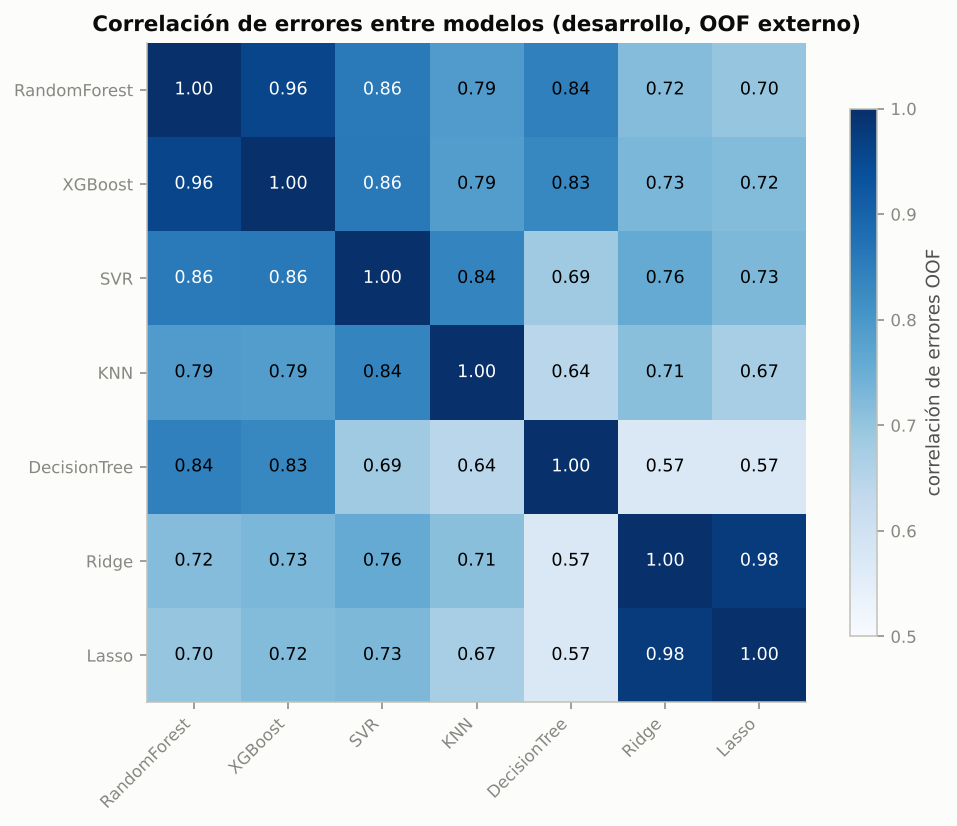

5b. Propuesta: modelos híbridos#
Random Forest y XGBoost quedaron empatados estadísticamente. La pregunta natural es si combinarlos produce un modelo mejor que cada uno. Se prueban tres mezclas, definidas antes de mirar la prueba:
Híbrido RF + XGBoost con peso óptimo de Bates y Granger (1969).
RF + SVR: la pareja fuerte con errores más distintos.
Super Learner (van der Laan, Polley y Hubbard, 2007): combinación convexa de los 7 modelos.
Formulación#
Para dos modelos con errores \(e_R = y - \hat y_R\) y \(e_X = y - \hat y_X\):
La ganancia frente al mejor modelo individual depende de la correlación de errores \(\rho\): si \(\rho \to 1\), \(\mathrm{MSE}(w^*) \to \min(\sigma_R^2, \sigma_X^2)\) y combinar no aporta.
El Super Learner generaliza a \(M\) modelos:
donde \(P\) contiene predicciones out-of-fold de cada modelo. Su desigualdad de oráculo garantiza que, asintóticamente, rinde tanto como la mejor combinación convexa.
Protocolo sin fuga#
CV externa: en cada pliegue externo \(k\) los pesos se estiman con predicciones OOF de un GroupKFold(3) interno sobre el entrenamiento externo \(k\) (hiperparámetros del pliegue \(k\)) y se aplican al pliegue externo \(k\).
Prueba: los pesos se estiman con las predicciones OOF externas de todo el desarrollo y se aplican a las predicciones de los modelos finales. La prueba nunca interviene en la estimación de pesos.
import sys, warnings, json, pickle
sys.path.insert(0, "..")
warnings.filterwarnings("ignore")
import numpy as np
import pandas as pd
import matplotlib.pyplot as plt
from src import config as C
from src.viz import set_style
import run_blend, run_blend2
C.set_global_seed()
set_style()
pd.set_option("display.float_format", lambda v: f"{v:,.4f}")
OUT = C.RESULTS_DIR / "blend"
1. ¿Se equivocan los modelos en los mismos activos?#
Correlación de los errores out-of-fold externos (cada fila del desarrollo predicha una vez, sin haber sido vista) del mejor optimizador de cada modelo.
BEST = run_blend2.BEST
E = {}
for m, meth in BEST.items():
parts = [pickle.load(open(C.RESULTS_DIR / "cache" / f"A_estructural__{m}__{meth}__{k}.pkl", "rb")) for k in range(10)]
n = sum(len(p["y"]) for p in parts)
e = np.zeros(n)
for p in parts:
e[p["index"]] = p["y"] - p["pred"]
E[m] = e
E = pd.DataFrame(E)
corr = E.corr()
fig, ax = plt.subplots(figsize=(7.5, 6))
im = ax.imshow(corr, vmin=0.5, vmax=1, cmap="Blues"); ax.grid(False)
ax.set_xticks(range(7), corr.columns, rotation=45, ha="right"); ax.set_yticks(range(7), corr.columns)
for i in range(7):
for j in range(7):
ax.text(j, i, f"{corr.iloc[i, j]:.2f}", ha="center", va="center", fontsize=9,
color="white" if corr.iloc[i, j] > 0.85 else "black")
fig.colorbar(im, ax=ax, shrink=.8, label="correlación de errores OOF")
ax.set_title("Correlación de errores entre modelos (desarrollo, OOF externo)")
fig.tight_layout(); fig.savefig(C.FIG_DIR / "hibridos_corr_errores.png", dpi=150)
plt.show()

Ningún par baja de 0.57: todos los modelos fallan en los mismos activos. RF y XGBoost tienen 0.96, la pareja más redundante; SVR es el compañero fuerte más distinto (0.86).
2. Híbrido RF + XGBoost#
run_blend.main()
fold w_RF rho_err_inner rmse_RF rmse_XGB rmse_Hibrido rmse_Promedio50
0 0 0.7553 0.9503 1.9102 1.8298 1.8676 1.8386
1 1 0.7457 0.9310 1.5780 1.7330 1.5991 1.6319
2 2 0.8401 0.9384 1.6070 1.5145 1.5821 1.5415
3 3 0.7411 0.9268 1.5108 1.4688 1.4841 1.4690
4 4 0.6095 0.9654 3.3371 3.4514 3.3713 3.3833
5 5 0.7009 0.9370 2.0713 1.9987 2.0138 1.9919
6 6 0.6616 0.9331 1.6668 1.7479 1.6668 1.6769
7 7 0.9846 0.9327 2.2463 2.2882 2.2458 2.2491
8 8 0.5765 0.9334 1.8010 1.9097 1.8255 1.8334
9 9 0.6124 0.9405 2.3533 2.6307 2.4457 2.4762
{
"RF": {
"mean_diff": 0.0019896784054329155,
"folds_better": 6,
"wilcoxon_p": 0.384765625,
"ttest_p": 0.5556936830438808,
"cliff": [
-0.02,
"despreciable"
]
},
"XGB": {
"mean_diff": -0.04709804131073216,
"folds_better": 6,
"wilcoxon_p": 0.052734375,
"ttest_p": 0.048670980788674933,
"cliff": [
-0.06,
"despreciable"
]
},
"friedman": {
"chi2": 0.8000000000000114,
"p": 0.6703200460356356
}
}
{
"w_final": 0.8340224671813306,
"rho_err_dev": 0.9577194311042471,
"var_eR": 4.303840151676683,
"var_eX": 4.55613670878322,
"cov_eRX": 4.242340643170536,
"w_bates_granger_unclipped": 0.8361304722270095,
"bias_RF": -0.001189258877945718,
"bias_XGB": -0.025557305266443616,
"rmse_oof": {
"rf": 2.0745702123604692,
"xgb": 2.1346638809507463,
"hyb": 2.081073178528094
}
}
rmse mae mape r2
Híbrido (w*) 1.6782 0.9456 6.6078 0.9166
Promedio 50/50 1.6321 0.9210 6.4875 0.9211
XGBoost 1.6481 0.9401 6.6571 0.9196
RandomForest 1.7171 0.9694 6.7369 0.9127
w oráculo (diagnóstico): 0.328
0 1
vs XGBoost RandomForest
dRMSE 0.0301 -0.0388
dm_hln -0.4936 2.6992
dm_p 0.6218 0.0071
dMSE_ci_low -0.4474 -0.2593
dMSE_ci_high 0.6374 -0.0405
gw 3.9454 8.3408
gw_p 0.1391 0.0154
cw 1.6264 2.9257
cw_p 0.0519 0.0017
cluster_ci_low -0.1338 -0.0685
cluster_ci_high 0.1771 -0.0127
cluster_p_one_sided 0.6558 0.0005
asset_better_share 0.4964 0.6619
dm_p_holm 0.6218 0.0142
model RMSE p_mcs in_mcs
0 XGBoost|Random 1.5958 1.0000 True
1 XGBoost|Bayesiana 1.6235 0.7755 True
2 XGBoost|Grid 1.6481 0.7755 True
3 RandomForest|Bayesiana 1.6544 0.7755 True
4 Híbrido RF+XGB|w* 1.6782 0.7270 True
5 RandomForest|Genetica 1.6993 0.6415 True
6 XGBoost|Genetica 1.7097 0.6415 True
7 RandomForest|Random 1.7171 0.6300 True
8 RandomForest|Grid 1.7212 0.5300 True
9 DecisionTree|Random 1.9208 0.5300 True
10 DecisionTree|Genetica 1.9326 0.4100 True
11 DecisionTree|Grid 1.9611 0.3215 True
tiempo 22.3
s1 = json.load(open(OUT / "summary.json", encoding="utf-8"))
th = s1["theory"]
sR, sX, sRX = th["var_eR"], th["var_eX"], th["cov_eRX"]
mse_min = (sR * sX - sRX ** 2) / (sR + sX - 2 * sRX)
print(f"ρ errores = {th['rho_err_dev']:.3f} · w* = {th['w_final']:.3f}")
print(f"MSE mínimo teórico = {mse_min:.3f} vs MSE RF = {sR:.3f} → ganancia máxima {100 * (1 - mse_min / sR):.2f} %")
print(f"w estimado en desarrollo = {th['w_final']:.2f}; w 'oráculo' en prueba (solo diagnóstico) = {s1['w_oracle_test_diagnostic']:.2f}")
ρ errores = 0.958 · w* = 0.834
MSE mínimo teórico = 4.294 vs MSE RF = 4.304 → ganancia máxima 0.23 %
w estimado en desarrollo = 0.83; w 'oráculo' en prueba (solo diagnóstico) = 0.33
Con \(\rho = 0.96\) la ganancia máxima posible de la combinación es de apenas ~0.2 % del MSE. Además, el peso es inestable: el estimado en desarrollo (0.83) y el que habría sido óptimo en prueba (0.33) son muy distintos. Es el forecast combination puzzle (Smith y Wallis, 2009): cuando la ganancia potencial es pequeña, el error de estimar \(w\) se la come.
3. RF + SVR y Super Learner#
run_blend2.main()
fold rmse_RandomForest rmse_XGBoost rmse_SVR rmse_RF+SVR rmse_SuperLearner
0 0 1.9100 1.8300 2.2310 1.9220 1.8840
1 1 1.5780 1.7330 1.6600 1.5550 1.5630
2 2 1.6070 1.5140 1.8380 1.5950 1.5710
3 3 1.5110 1.4690 1.6800 1.4670 1.4560
4 4 3.3370 3.4510 3.3980 3.3320 3.4290
5 5 2.0710 1.9990 1.7900 1.9230 1.9060
6 6 1.6670 1.7480 2.0500 1.6580 1.6680
7 7 2.2460 2.2880 2.5820 2.2530 2.2430
8 8 1.8010 1.9100 2.2120 1.8670 2.0160
9 9 2.3530 2.6310 2.4270 2.3480 2.4380
fold 4.5000
rmse_RandomForest 2.0082
rmse_XGBoost 2.0573
rmse_SVR 2.1867
rmse_RF+SVR 1.9920
rmse_SuperLearner 2.0174
dtype: float64
RandomForest SVR XGBoost KNN DecisionTree Ridge Lasso
mix
RF+SVR 0.8100 0.1900 NaN NaN NaN NaN NaN
SuperLearner 0.5510 0.1460 0.1790 0.0010 0.0700 0.0000 0.0520
{
"RF+SVR vs RandomForest": {
"mean_diff": -0.016176900484660584,
"folds_better": 7,
"wilcoxon_p": 0.1611328125,
"ttest_p": 0.1858142787589571,
"cliff": [
-0.04,
"despreciable"
]
},
"RF+SVR vs XGBoost": {
"mean_diff": -0.06526462020082566,
"folds_better": 8,
"wilcoxon_p": 0.0654296875,
"ttest_p": 0.050704259582814236,
"cliff": [
-0.06,
"despreciable"
]
},
"SuperLearner vs RandomForest": {
"mean_diff": 0.00925010058834097,
"folds_better": 6,
"wilcoxon_p": 0.4609375,
"ttest_p": 0.6095993860767848,
"cliff": [
-0.04,
"despreciable"
]
},
"SuperLearner vs XGBoost": {
"mean_diff": -0.03983761912782411,
"folds_better": 7,
"wilcoxon_p": 0.1611328125,
"ttest_p": 0.11387287109325896,
"cliff": [
-0.06,
"despreciable"
]
}
}
{'RF+SVR': {'RandomForest': np.float64(0.7644), 'SVR': np.float64(0.2356)}, 'SuperLearner': {'RandomForest': np.float64(0.721), 'XGBoost': np.float64(0.0346), 'SVR': np.float64(0.2117), 'KNN': np.float64(0.0), 'DecisionTree': np.float64(0.0), 'Ridge': np.float64(0.0), 'Lasso': np.float64(0.0328)}}
rmse mae mape r2
modelo
RF+SVR 1.7243 0.9566 6.6258 0.9119
SuperLearner 1.7227 0.9600 6.6672 0.9121
XGBoost 1.6481 0.9401 6.6571 0.9196
RandomForest 1.7171 0.9694 6.7369 0.9127
0 ... 3
mezcla RF+SVR ... SuperLearner
vs XGBoost ... RandomForest
dRMSE 0.0762 ... 0.0056
dm_hln -0.8662 ... -0.2296
dm_p 0.3867 ... 0.8184
gw_p 0.1806 ... 0.0596
cw_p 0.0736 ... 0.0933
cluster_ci (-0.1163, 0.2743) ... (-0.054, 0.0657)
cluster_p 0.7660 ... 0.5682
dm_p_holm 1.0000 ... 1.0000
[10 rows x 4 columns]
model RMSE p_mcs in_mcs
0 XGBoost|Random 1.5958 1.0000 True
1 XGBoost|Bayesiana 1.6235 0.7755 True
2 XGBoost|Grid 1.6481 0.7755 True
3 RandomForest|Bayesiana 1.6544 0.7755 True
4 RandomForest|Genetica 1.6993 0.7665 True
5 XGBoost|Genetica 1.7097 0.7665 True
6 RandomForest|Random 1.7171 0.6600 True
7 RandomForest|Grid 1.7212 0.5950 True
8 SuperLearner 1.7227 0.7665 True
9 RF+SVR 1.7243 0.7665 True
4. Resumen#
f1 = pd.read_csv(OUT / "folds.csv"); f2 = pd.read_csv(OUT / "folds_mix2.csv")
t1 = pd.read_csv(OUT / "test_metrics.csv", index_col=0)
s2 = json.load(open(OUT / "summary_mix2.json", encoding="utf-8"))
t2 = pd.DataFrame(s2["test"]).T
res = pd.DataFrame({
"RMSE CV externa": [f1.rmse_Hibrido.mean(), f2["rmse_RF+SVR"].mean(), f2.rmse_SuperLearner.mean(),
f1.rmse_RF.mean(), f1.rmse_XGB.mean()],
"d.e. pliegues": [f1.rmse_Hibrido.std(), f2["rmse_RF+SVR"].std(), f2.rmse_SuperLearner.std(),
f1.rmse_RF.std(), f1.rmse_XGB.std()],
"RMSE prueba": [t1.loc["Híbrido (w*)", "rmse"], t2.loc["RF+SVR", "rmse"], t2.loc["SuperLearner", "rmse"],
t1.loc["RandomForest", "rmse"], t1.loc["XGBoost", "rmse"]],
"R² prueba": [t1.loc["Híbrido (w*)", "r2"], t2.loc["RF+SVR", "r2"], t2.loc["SuperLearner", "r2"],
t1.loc["RandomForest", "r2"], t1.loc["XGBoost", "r2"]],
}, index=["Híbrido RF+XGB", "RF+SVR", "Super Learner", "Random Forest", "XGBoost"])
res.to_csv(OUT / "resumen.csv")
res
| RMSE CV externa | d.e. pliegues | RMSE prueba | R² prueba | |
|---|---|---|---|---|
| Híbrido RF+XGB | 2.0102 | 0.5676 | 1.6782 | 0.9166 |
| RF+SVR | 1.9920 | 0.5528 | 1.7243 | 0.9119 |
| Super Learner | 2.0174 | 0.5862 | 1.7227 | 0.9121 |
| Random Forest | 2.0082 | 0.5486 | 1.7171 | 0.9127 |
| XGBoost | 2.0573 | 0.6004 | 1.6481 | 0.9196 |
tt = pd.concat([pd.read_csv(OUT / "tests.csv").assign(mezcla="Híbrido RF+XGB"), pd.read_csv(OUT / "tests_mix2.csv")])
tt[["mezcla", "vs", "dRMSE", "dm_hln", "dm_p", "dm_p_holm", "gw_p", "cw_p"]]
| mezcla | vs | dRMSE | dm_hln | dm_p | dm_p_holm | gw_p | cw_p | |
|---|---|---|---|---|---|---|---|---|
| 0 | Híbrido RF+XGB | XGBoost | 0.0301 | -0.4936 | 0.6218 | 0.6218 | 0.1391 | 0.0519 |
| 1 | Híbrido RF+XGB | RandomForest | -0.0388 | 2.6992 | 0.0071 | 0.0142 | 0.0154 | 0.0017 |
| 0 | RF+SVR | XGBoost | 0.0762 | -0.8662 | 0.3867 | 1.0000 | 0.1806 | 0.0736 |
| 1 | RF+SVR | RandomForest | 0.0073 | -0.2988 | 0.7652 | 1.0000 | 0.0919 | 0.1407 |
| 2 | SuperLearner | XGBoost | 0.0746 | -0.8605 | 0.3898 | 1.0000 | 0.1954 | 0.0877 |
| 3 | SuperLearner | RandomForest | 0.0056 | -0.2296 | 0.8184 | 1.0000 | 0.0596 | 0.0933 |
Conclusión#
Ninguna mezcla supera de forma significativa al mejor modelo individual. En CV externa, RF + SVR logra el RMSE medio más bajo del proyecto (1.992), pero frente a RF la diferencia no es significativa (gana en 7 de 10 pliegues; Wilcoxon p = 0.16; δ de Cliff despreciable). En prueba, ninguna mezcla difiere de XGBoost (Diebold-Mariano p ≥ 0.39) y todas entran al MCS.
El único resultado significativo es que el híbrido RF + XGBoost mejora a RF en prueba (DM p = 0.014 con Holm; bootstrap por activo [−0.069, −0.013]), pero no a XGBoost.
El Super Learner asignó 72 % a RF, 21 % a SVR y casi nada a XGBoost: para combinar importa la diversidad de errores más que el desempeño individual.
Explicación: el error dominante es el efecto propio de cada activo, común a todos los modelos (correlaciones de error ≥ 0.57). Combinar solo reduce la parte del error que los modelos no comparten. El límite está en la información disponible, no en el algoritmo.